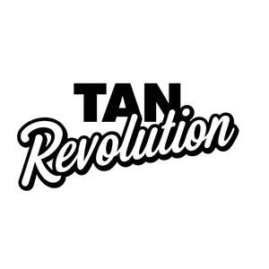

Trade Mark Journal No.2025/047 21 November 2025
UK00004289396 5 November 2025 (3)

- Class 3
- Sun tan lotion; Sun tan gel; Sun tan oil; Sun tan milk; Suntan lotions; Suntan creams; Suntan lotion [cosmetics]; Creams for tanning the skin; Suntan creams [self-tanning creams]; Sun bronzers; Cosmetic suntan lotions; Tanning creams; SPF sun block sprays; Hair lotion; Cosmetic patches containing sunscreen and sun block for use on the skin; Hair color; Sunscreen cream; Skin cream; Sunblock; Cream for whitening the skin; Whitening the skin (Cream for -); Suntan oils [cosmetics]; Hair spray; Camouflage cream; Hair cream; Sun-tanning lotions; Tints for the hair; Cosmetics for protecting the skin from sunburn; Skin cream [for cosmetic use]; Self tanning lotions [cosmetic]; Colour cosmetics for the skin; Self tanning creams [cosmetic]; Sun-tanning creams; Scented body spray; Tints for the beard; Hair styling spray; Tanning gels [cosmetics]; Oils for moisturising the skin after sunbathing; Skin lotions; Moisturising body lotion [cosmetic]; Cosmetic sun milk lotions; Creams for leather; Leather (Creams for -); Lotions for the skin; Sunscreen; Sun-block lotions; Patches containing sun screen and sun block for use on the skin; Body mask lotion; Colouring lotions for the hair; Body mask cream; Sun-tanning creams and lotions; Fair complexion cream; Skin cleansing lotion; Skin cleansing cream; Skin moisturizer; Cosmetic white face powder; Cosmetics for suntanning; Moisturising skin lotions [cosmetic]; Skin moisturiser; Sunscreen lotions; Hair lacquer; Sun-tanning gels; Body lotion; Cosmetic suntan preparations; Suntanning oil [cosmetics]; Skin whitening creams; Creams (Skin whitening -); Skin texturizers; Hair lotions; Body spray; Body cream; Facial lotion; Sun creams [for cosmetic use]; Hair color removers; Tanning oils [cosmetics]; Skin lighteners; Sunscreen creams; Henna [cosmetic dye]; Sunscreen [for cosmetic use]; Hair styling lotions; Cosmetics for use in the treatment of wrinkled skin; Milky lotions for skin care; Sun creams; Water-resistant sunscreen; After-sun lotions; Moisturising skin creams [cosmetic]; Cosmetic creams for firming skin around eyes; Skin make-up; Sunscreen creams [for cosmetic use]; Body oil spray; Sun-tanning oils; Tanning milks [cosmetics]; Tanning preparations [cosmetics]; Cosmetic tanning preparations; Self tanning preparations; Artificial tanning preparations; Sun care lotions [for cosmetic use]; After-sun lotions [for cosmetic use]; Suntanning preparations; Self-tanning preparations [cosmetics]; Cosmetic sun-tanning preparations; Self-tanning preparations [cosmetic]; Suncare lotions [for cosmetic use]; Cosmetic sun oils; Leather bleaching preparations; Cosmetic hair lotions; Bathing lotions; Suntan oils for cosmetic purposes; Sun protecting creams [cosmetics]; Sun care lotions; After-sun oils [cosmetics]; Shaving lotions; Sun blocking oils [cosmetics]; Suncare lotions; Skin care lotions [cosmetic]; Sun block [cosmetics]; Hair care lotions [for cosmetic use]; Sunscreens [for cosmetic use]; Cosmetics for the treatment of dry skin; Hair strengthening treatment lotions; Cosmetic massage creams; After-sun milk [cosmetics]; Sun-tanning preparations; Preservative creams for leather; Skin lotion; Styling lotions; Hair desiccating treatments for cosmetic use; Hair protection lotions; Cosmetic facial lotions; Shaving lotion; Non-medicated skin lotions; Skin moisturisers; Moisturiser; Moisturizing body lotions; Skin moisturizer masks; Skin moisturizers used as cosmetics; Skin moisturizers; Hair moisturisers; Skin cleansing cream [non-medicated]; Creams for firming the skin; Fair complexion creams; Facial lotions; Bath lotion; Non-medicated hair lotions; Beard dyes; Skin cleansers; Exfoliant creams; Hair moisturizers; Beard balm; Facial concealer; Body and facial creams [cosmetics]; Skin creams; Creams for the skin; Skin cleansers [non-medicated]; Leather polishes; Skin recovery creams [cosmetics]; Skin creams [non-medicated]; Lotions for beards; Skin cleaners [non-medicated]; Scented body lotions and creams; Skin toners; Non-medicated skin creams; Preservatives for leather [polishes]; Leather preservatives [polishes]; Blemish balm creams; Exfoliating creams; Skin hydrators; Spray polish; After-sun creams; Nail polish base coat; Nail base coat [cosmetics]; Mattifying gel cream; Foot deodorant spray; Body polish; Nail cream; Nail primer [cosmetics]; Powder for forming sculpted finger nail tips; Nail polish top coat; Nail gel; Cream foundation; Skin foundation; Smoothing emulsions for the skin; Glitter in spray form for use as a cosmetics; Hair gel; Chrome polish; Nail varnish remover [cosmetics]; Body mask powder; Nail polishing powder; Nail paint [cosmetics]; Body cream for cosmetic use; Base cream; After-sun milk for cosmetic use; Wax strips for removing body hair; Toning lotion, for the face, body and hands; Hair removing cream; Hair protection creams; Products for protecting coloured hair; Face creams for cosmetic use; Face lifting stickers for cosmetic use; Make-up base; Cosmetic paste for application to the face to counteract glare; Lotions for strengthening the nails; Age spot reducing creams for cosmetic use; Body emulsions for cosmetic use; Preparations for protecting coloured hair; Hair protection mousse; Face paint; Make-up for the face; Make-up for the face and body; Face and body creams; Face and body glitter; Face creams; Face and body masks; Face wash; Face and body lotions; Face blusher; Face scrub; Face powder; Face masks; Face glitter; Face wash [cosmetic]; Creamy face powder; Face paints; Face wipes; Face gels; Face powder [for cosmetic use]; Face oils; Exfoliating scrubs for the face; Face powders; Face cream (Non-medicated -); Lotions for face and body care; Make-up preparations for the face and body; Pressed face powder; Loose face powder; Cosmetic face powders; Face powders [for cosmetic use]; Face packs; Face packs [cosmetic]; Cleaning masks for the face; Face powder (Non-medicated -); Liquid soaps for hands and face; Face dusting powders; Face scrubs (Non-medicated -); Face powder in the form of powder-coated paper; Skin masks; Eyes make-up; Hair and body wash; Clay skin masks; Facial cream; Colour cosmetics for the eyes; Beauty tonics for application to the face; Facial wash; Hair masks; Skin masks [cosmetics]; Facial washes; Body paint (cosmetic); Hand masks for skin care; Facial cream [for cosmetic use]; Sun screen; After sun moisturisers; After sun creams; Sun protectors for lips; Sun blocking lipsticks [cosmetics]; Preparations for protecting the hair from the sun; Sun barriers [cosmetics]; Sun block preparations; Compounds for skin care after exposure to the suns rays; Sun protection preparations; Sun screen preparations; Sun blocking preparations [cosmetics]; Sun care preparations; Waterproof sunscreen; Skin lightening creams; Moisture body lotion; After-sun milk; Lavender gel; Shaving gel; After-shave gel; Gel scrub; Shave gel; Shower gel; Hair styling gel; Eyebrow gel; Bath gel; Hair gels; Tooth gel; Gel sprays being styling aids; Gel nail removers; Eye gel; Shower and bath gel; Bath and shower gel; Shaving gels; Moisturising gels [cosmetic]; Aloe vera gel for cosmetic purposes; Soaps in gel form; Moisturising creams, lotions and gels; Hair protection gels; Hair styling gels; Styling gels for the hair; Gel eye masks; Pre-shave gels; Gels for fixing hair; Aftershave gels; Shower gels; Body and facial gels [cosmetics]; Body gels [cosmetics]; Preparations for removing gel nails; Facial gels [cosmetics]; Gels for use on the hair; Soapy gels; Age retardant gel; Body gels; Aftershave moisturising cream; Styling gels; Hair mousse; Hair liquid; Cosmetic creams for dry skin; Hair powder; Moist wipes impregnated with a cosmetic lotion; Shower cream; Foaming bath gels; Baby shampoo mousse; Cosmetics in the form of gels; Shaving mousse; Bath gels; Hair creams; Body cream soap; Refill packs for shower gel dispensers; Cleansing gels; Shaving foam; Foam for use in shaving; Hair balm; Cuticle cream; Hair shampoo; Gel eye patches for cosmetic purposes; Shaving cream; Anti-wrinkle cream; Lip cream; Bath cream; Anti-wrinkle cream [for cosmetic use]; Cold cream; Cleansing cream; Boot cream; Cream soaps; Eye cream; Wrinkle resistant cream; Day cream; Hand cream; Moisturizing creams; Shaving creams; Beard oil; Hair dressings for men; Baby hair conditioner; Body mist; Mustache wax; Shampoos for human hair; Moustache wax; Wax (Moustache -); Baby lotion; Cosmetic body mud; Hair oil; Body oil; Massage oil; Shaving oil; Facial oil; Pine oil; Cuticle oil; Jasmine oil; Body oil [for cosmetic use]; Hair fixing oil; Bath oil; Cleansing oil; Lavender oil for cosmetic use; Baby oil; Rose oil; Combing oil; Citronella oil for cosmetic use; Eucalyptus oil for cosmetic use; Rosemary oil for cosmetic use; Peppermint oil [perfumery]; Oils for the skin; Creamy foundation; Creamy rouge; Creamy rouges; Tissues impregnated with leather gloss agents; Skin creams [for cosmetic use]; Cosmetic creams for the skin; Skin creams [cosmetic]; Facial lotions [cosmetic]; Skin toners [cosmetic]; Creams (Cosmetic -); Cosmetic creams; Facial creams [cosmetic]; Facial creams [for cosmetic use]; Cosmetic skin enhancers; Cosmetic moisturisers; Skin balms [cosmetic]; Facial moisturisers [cosmetic]; Cosmetic skin fresheners; Toning creams [cosmetic]; Skin cleansers [cosmetic]; Facial washes [cosmetic]; Facial toners [cosmetic]; Skin whitening preparations [cosmetic]; Cosmetic powder; Anti-aging creams [for cosmetic use]; Anti-wrinkle creams [for cosmetic use]; Cosmetic creams and lotions; Cosmetic creams for skin care; Skin care creams [cosmetic]; Dyes (Cosmetic -); Cosmetic dyes; Hair care creams [for cosmetic use]; Anti-ageing creams [for cosmetic use]; Facial scrubs [cosmetic]; Facial cleansers [cosmetic]; Hair tonics [for cosmetic use]; Cosmetic sunscreen preparations; Cleansing creams [cosmetic]; Cosmetic soap; Skin conditioning creams for cosmetic purposes; Skin relief serum [cosmetic]; Hair tonic [for cosmetic use]; Cosmetic masks; Cosmetic facial masks; Facial masks [cosmetic]; Acne cleansers, cosmetic; Cosmetic pencils; Pencils (Cosmetic -); Cosmetic body scrubs; Body scrubs [cosmetic]; Hair rinses [for cosmetic use]; Perfumed powder [for cosmetic use]; Cosmetic nourishing creams; Skin hydrators for cosmetic purposes; Skin care oils [cosmetic]; Cosmetics and cosmetic preparations; Cosmetic soaps; Retinol cream for cosmetic purposes; Cosmetic oils for the epidermis; Cosmetic preparations for skin firming; Henna for cosmetic purposes; Lotions for cosmetic purposes; Lip coatings [cosmetic]; Tonics [cosmetic]; Body oils [for cosmetic use]; Facial packs [cosmetic]; Cosmetic facial packs; Facial creams [cosmetics]; Body paint for cosmetic purposes; Wrinkle resistant creams [for cosmetic use]; Hydrating creams for cosmetic use; Cosmetic products for the shower; Topical skin sprays for cosmetic purposes; Lip stains for cosmetic purposes; Cosmetic pencils for cheeks; Lotions (Tissues impregnated with cosmetic -); Tissues impregnated with cosmetic lotions; Cosmetic sun-protecting preparations; Skin lightening compositions [cosmetic]; Makeup; Make-up; Facial makeup; Make-up primer; Lip makeup; Natural makeup; Nail makeup; Make-up powder; Powder (Make-up -); Powder for make-up; Organic makeup; Make-up primers; Foundation make-up; Make-up foundation; Make-up remover; Make-up removing lotions; Hair cosmetics; Chalk for make-up; Eye makeup; Make-up pencils; Hair mascara; Eye makeup remover; Make-up removing creams; Make-up removers; Make-up palettes containing cosmetics; Make-up for compacts; Multifunctional makeup; Make-up foundations; Eye make-up; Makeup setting sprays; Lip stains [cosmetics]; Cosmetics for the use on the hair; Make-up removing gels; Colour cosmetics; Eyelid doubling makeup; Body creams [cosmetics]; Eye make-up removers; Hair lighteners; Hair colour removers; Colour removers for the hair; Make-up kits; Body lotions; Body moisturisers; Body sprays; Body creams; Body washes; Body scrub; Body shampoos; Body wash; Body butter; Body powder; Body deodorants; Body glitter; Body splash; Body scrubs; Body and facial oils; Body oils; Body milk; Scented body lotions; Body soap; Body and facial butters; Body masks; Body emulsions; Body fragrances; Scented body creams; Body soufflé; Body butters; Body glitters; Body massage oils; Exfoliating scrubs for the body; Exfoliating body scrub; Body firming creams; Body milks; Body cleansing foams; Deodorants for body care; Non-medicated body soaks; Body sprays [non-medicated]; Hand and body butter; Body powder (Non-medicated -); Baby body milks; Sparkling fluid for the body; Body care cosmetics; Creams (Non-medicated -) for the body; Beauty creams for body care; Body talcum powder; Liquid latex body paint for cosmetic purposes; Lip tints; Lip gloss; Lip gloss palettes; Lip balm; Lip rouge; Lip cosmetics; Lip balms; Lip liner; Lip glosses; Lip pencils; Lip pomades; Lip liners; Lip polisher; Lip conditioners; Lip balm [non-medicated]; Lip neutralizers; Lip protectors [cosmetic]; Non-medicated lip balms; Lip balms [non-medicated]; Lip coatings (Non-medicated -); Hair balms; Lipstick; Lip protectors (Non-medicated -); Eyebrow mascara; Eyelash tint; Eyebrow styling wax; Non-medicated balm for hair; Eyebrow cosmetics; Lip care preparations; Foot scrubs; Non-medicated foot cream; Non-medicated foot soaks; Foot smoothing stones; Foot perspiration (Soap for -); Soap for foot perspiration; Foot powder [non-medicated]; Foot masks for skin care; Non-medicated foot lotions; Deodorants for the feet; Exfoliating scrubs for the feet; Liquid soap used in foot baths; Liquid soap used in foot bath; Foot balms (Non-medicated -); Eye shadow; Eye lotions; Eye creams; Eye concealers; Eye wrinkle lotions; Eye cosmetics; Eye shadows; Eye liner; Eye pencils; Cosmetics in the form of eye shadow; Cosmetic eye pencils; Eye gels; Cosmetic eye gels; Eye brightening correctors; Eye correction serum; Eye sticks; Skin, eye and nail care preparations; Cosmetic preparations for eye lashes; Eye stylers; Under eye correctors; Eyelid shadow; Eye make up remover; Liners [cosmetics] for the eyes; Creams (Non-medicated -) for the eyes; Eyebrow colors; Auto-tanning creams; Creams for fixing hair; Hair bleaches; Facial creams; Conditioning creams; Hair sprays; After-shave creams; Aftershave creams; After-sun milks [cosmetics]; Shave creams; Baby shampoo; Baby lotions; Baby suncreams; Baby powder; Baby bath mousse; Hair dye; Hair colouring; Colour cosmetics for children; Hair bleach; Hair conditioners for babies; Tanning preparations; Sun-tanning preparations [cosmetics]; Cosmetic preparations for nail drying; Cosmetic preparations for protecting the skin from the sun's rays; Sun care preparations for cosmetic use; Cosmetic preparations against sunburn; Scented wax melts; Sunscreen sticks; Incense spray; Hair wax; Skin toner; Skin emollients; Skin soap; Skin conditioners; Skin care mousse; Skin calming serum; Moisturizing preparations for the skin; Skin fresheners; Exfoliants for the cleansing of the skin; Cosmetics for use on the skin; Tissues impregnated with a skin cleanser; Exfoliants for the care of the skin; Skin cleansing foams; Skin care cosmetics; Skin clarifiers; Non-medicated skin serums; Skin whitening preparations; Perfumed oils for skin care; Skin fresheners [cosmetics]; Cloths impregnated with a skin cleanser; Non medicated skin toners; Skin emollients [non-medicated]; Non-medicated stimulating lotions for the skin; Non-medicated skin clarifying lotions; Skin hydrators being injectable dermal fillers; Wipes impregnated with a skin cleanser; Cheek colors; Cheek colours; Cheek rouges; Eyebrow powder; Blush; Blush pencils; Adhesives for false eyelashes, hair and nails; Concealers for spots and blemishes; Pores tightening mask packs used as cosmetics; Concealers for lines and wrinkles; Cosmetic mud masks; Foundation; Liquid foundation; Foundations; Liquid foundation (mizu-oshiroi); Solid powder for compacts [cosmetics]; Solid powder for cosmetic compacts; Solid powder for compacts; Perfumes in solid form; Make up foundations; Hand lotions; Hand creams; Hand washes; Hand lotion (Non-medicated -); Hand soap; Hand gels; Hand scrubs; Cosmetic hand creams; Hand cleansers; Moist paper hand towels impregnated with a cosmetic lotion; Hand powders; Hand soaps; Hand cleaner; Hand milks; Paper hand towels impregnated with cosmetics; Hand oils (Non-medicated -); Hand cleaners [hand cleaning preparations].
SERENE DIXON